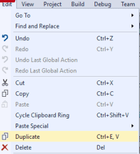

Visual Studio : short cut Key : Duplicate Line
Is there a shortcut for Duplicate Line command in Visual Studio 2008?
Some similar examples:
- in Notepad++ , I can duplicate the current line with:
Ctrl+D - in EditPlus :
Ctrl+J - in NetBeans :
Ctrl+Shift+↓/↑ - in Eclipse ,
Ctrl+Alt+↓/↑ - in Vi/Vim ,
yy``p - etc.
Answer
In Visual Studio 2022
Ctrl + E, V
In Visual Studio 2019
Ctrl + D
In Visual Studio 2017 (v15.6 and after)
Ctrl + D
In Visual Studio 2017 (pre v15.6)
(edit) This feature is now built-in in VS2017: Ctrl + E, V duplicates a
line if nothing is selected, or duplicates selection. You can assign it to a
different key combination, or find it in the menu:

See this reference for more information.
Pre VS2017, built-in method using clipboard
As @cand mentioned, you can just do Ctrl + C ; Ctrl + V.
Ctrl + C will copy the line if nothing is selected.
Macro solution (pre VS2017)
If you'd like to implement a more complete solution, perhaps to create a simpler keyboard shortcut or you don't want to effect the clipboard, see this guide:
Visual Basic:
Imports System Imports EnvDTE Imports EnvDTE80 Imports System.Diagnostics Public Module DuplicateLastLineModule Sub DuplicateLine() Dim line As String DTE.ActiveDocument.Selection.StartOfLine(0) DTE.ActiveDocument.Selection.EndOfLine(True) line = DTE.ActiveDocument.Selection.Text DTE.ActiveDocument.Selection.EndOfLine() DTE.ActiveDocument.Selection.NewLine() DTE.ActiveDocument.Selection.StartOfLine(0) DTE.ActiveDocument.Selection.Text = line End Sub End ModuleTo create the macro, just go to the macro explorer ("Tools->Macros->Macro Explorer" or
Alt+F8) and copy paste the code in a new module. Now just assign a keyboard shortcut to it:
- go to Tools->Options...
- under Environment, click Keyboard
- in the "Show Commands Containing" textbox, enter "duplicate" (this according to the name you gave the module.)
- you should now see the macro in the list below
- choose "Text Editor" from the "Use new shortcut in" list
- set focus in the "Press shortcut keys" textbox and hit the combination on the keyboard you wish to use for it (
Ctrl+Shift+Din my case)- hit the "Assign" button
- you should now see the shortcut in the "Shortcuts for selected command" textbox
- hit the OK button
And that's it. Enjoy!
Suggest
There's a free extension you can download here that lets you duplicate lines without replacing the clipboard contents.
By default its bound to Alt + D, but you can change it to anything you
want by going to Tools->Options->Environment->Keyboard. Type "Duplicate" in
the search box and look for "Edit.DuplicateSelection" and edit the shortcut to
whatever you want. I prefer Ctrl + D to be consistent with other editors.